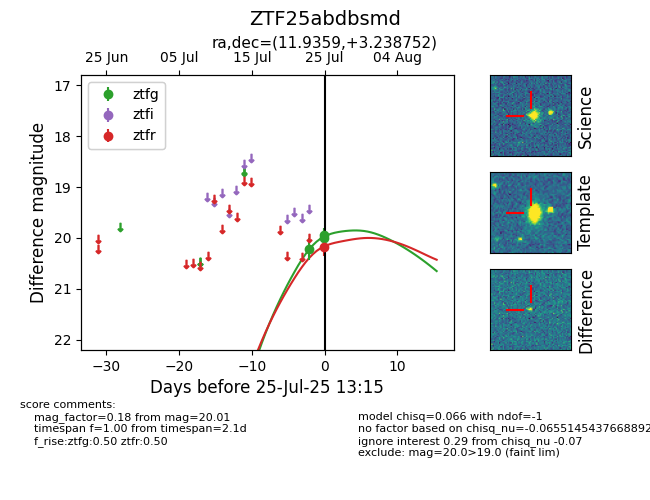

Target ZTF25abdbsmd at 2025-07-25 13:15, see:
FINK: fink-portal.org/ZTF25abdbsmd
Lasair: lasair-ztf.lsst.ac.uk/objects/ZTF25abdbsmd
ALeRCE: alerce.online/object/ZTF25abdbsmd
alt names
ZTF25abdbsmd (ztf,fink)
coordinates:
equatorial (ra, dec) = (11.9359,+3.23875)
galactic (l, b) = (121.1083,-59.61991)
photometry
last ztfg=20.01, ztfr=20.17
3 ztfg, 1 ztfr detections
